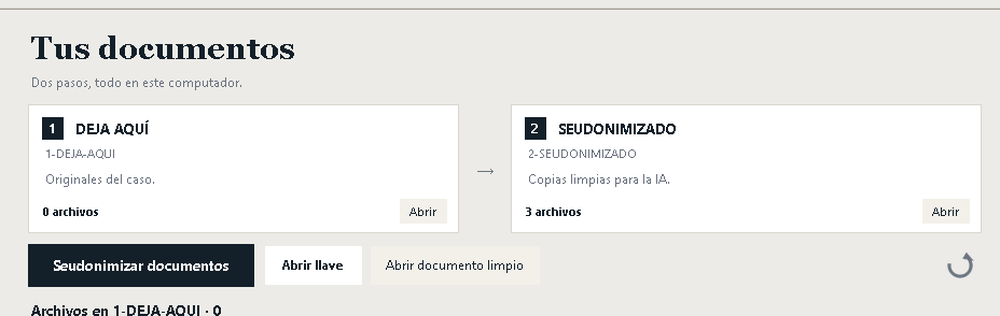

Seudonimización local para documentos jurídicos
El nombre
no viaja.
APONYM reemplaza nombres, RUT, domicilios y causas por marcadores antes de que el documento llegue a una IA. La llave para volver a los datos originales queda en tu computador.
Sello APY · programa de escritorio para Windows · sin conexión
El mismo documento antes y después de APONYM
Comparece doña María Soledad Fuentes Riquelme, RUT 12.345.678-9, domiciliada en Av. Providencia 1234, depto 56, comuna de Providencia, en la causa RIT C-1234-2026.
Comparece doña [NOMBRE-1-A7F3], RUT [RUT-1-2B9C], domiciliada en [DOMICILIO-1-7E14], comuna de Providencia, en la causa RIT [RIT-1-0C55].
Consultar un caso real con una IA es cómodo. El problema es todo lo que viaja con el documento: la persona, su RUT, su casa, el tribunal donde litiga.
La Ley 21.719 entra en vigencia el 1 de diciembre de 2026. El proyecto que la posterga al 15 de octubre de 2027 ya avanzó en el Congreso, pero no cambia la fecha mientras no se publique en el Diario Oficial. Una capa previa de seudonimización reduce la exposición de los datos sensibles del caso.
Cómo funciona
Dos carpetas y una llave. Nada más que aprender.
-
Deja el documento
Arrastra el archivo
.docx,.pdfcon texto,.mdo.txta la carpeta1-DEJA-AQUI. Si el caso tiene nombres poco frecuentes, agrégalos en la lista del caso. -
APONYM seudonimiza
El documento queda en
2-SEUDONIMIZADOcomo copia limpia (sin autor, historial ni comentarios) y enllaves/apareceLLAVE-<CÓDIGO>.pdfcon la tabla marcador → dato original. -
Trabaja con la IA y restaura a mano
Envía solo la copia seudonimizada. Con la respuesta en tu editor, reemplaza cada marcador usando la llave y Ctrl + H. Esa restauración ocurre fuera del programa y bajo tu revisión.

La llave que vuelve atrás
Un PDF por caso, con la tabla marcador → dato. Se abre en tu computador.
- [NOMBRE-1-A7F3]
- María Soledad Fuentes Riquelme
- [RUT-1-2B9C]
- 12.345.678-9
- [DOMICILIO-1-7E14]
- Av. Providencia 1234, depto 56
- [RIT-1-0C55]
- C-1234-2026
Lo que el motor no reconoce se declara en la lista del caso: nombres poco frecuentes, alias, empresas y frases que deban conservarse. La revisión final siempre es humana.
Qué reemplaza y qué conserva
La decisión de qué ocultar no es estética: define si el documento sigue sirviendo para litigar.
Reemplaza por marcadores
- Nombres y apellidos frecuentes
- RUT, incluidas sociedades
- Correos y teléfonos
- Domicilios
- Oficios e instituciones
- RIT, RUC y Rol de la causa
Conserva
- Comunas y regiones, porque definen competencia
- Citas jurisprudenciales completas
- Las frases que declares con
preservar: - La estructura del documento y el tipo de cada marcador:
[INST-HOSPITAL-1-A7F3]
Tres formas de hacerlo
La diferencia no es la IA. Es dónde queda el vínculo.
| Criterio | Subir el caso a la IA | Anonimizar a mano | APONYM |
|---|---|---|---|
| Riesgo de exponer datos | Alto | Medio | Bajo |
| Tiempo por documento | Segundos | Minutos | Segundos |
| Se puede volver atrás | No | Difícil | Sí, con la llave |
| Dónde quedan los datos | En el proveedor | En tu equipo | En tu equipo |
| Consistencia entre documentos | No aplica | Baja | Alta |
Comparación referencial. El riesgo final depende de cómo se use cada método.
Local por diseño
Sin red
No llama a ningún servidor, no tiene telemetría y no actualiza nada por su cuenta.
Sin cuentas
Se activa con un código en el equipo. No hay registro, ni login, ni panel en la nube.
La llave no sale
El mapa y la llave quedan en tu computador, fuera de OneDrive y de cualquier carpeta sincronizada.
APONYM aplica seudonimización en el sentido del artículo 2 letra l) de la Ley 21.719: los datos se reemplazan y el vínculo queda en un mapa separado, en poder de quien usa el programa. No es anonimización irreversible y no reemplaza el criterio del abogado.
Para quién es
Abogado independiente
Consultas puntuales, sin montar un sistema de privacidad.
Estudio pequeño
Varios casos por semana y un solo criterio para todo el equipo.
Docencia y clínica jurídica
Casos reales con IA, bajo la revisión del profesor.
Quiénes lo hacemos
Damián Pinto
Derecho. Diseña y desarrolla el programa; define qué se oculta y qué se conserva en cada capa.
Hugo Cariaga
Informática. Audita el código y prueba el instalador en equipos limpios antes de cada entrega.
El derecho pone el criterio; la informática pone el método.
¿Lo vemos con un caso tuyo?
Una demo de veinte minutos: se toma un documento real, se seudonimiza y se muestra la llave. Si el flujo no te sirve, lo sabrás en esa media hora.